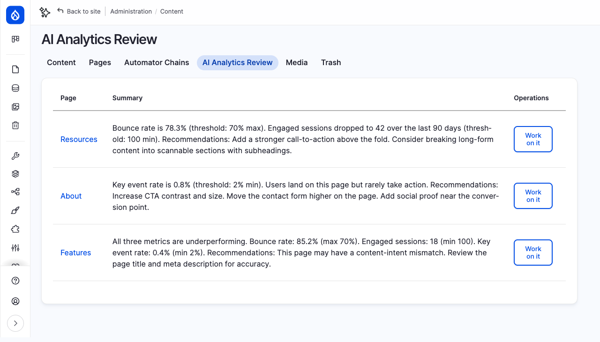
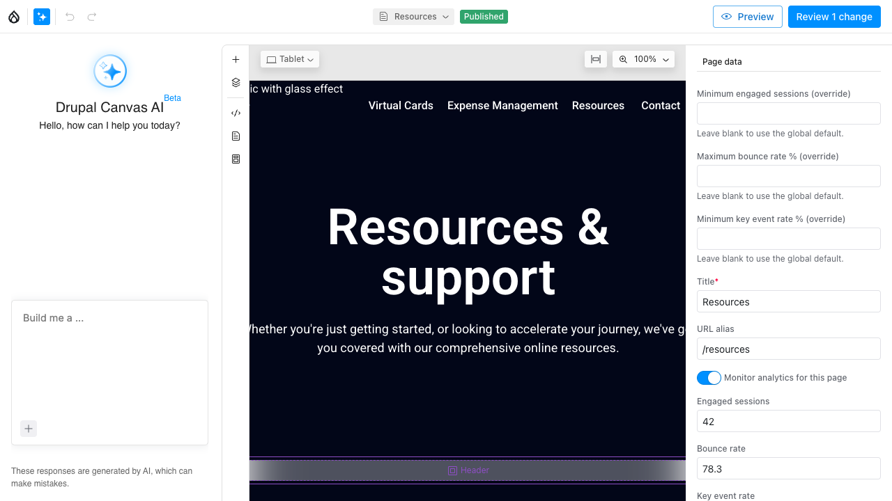
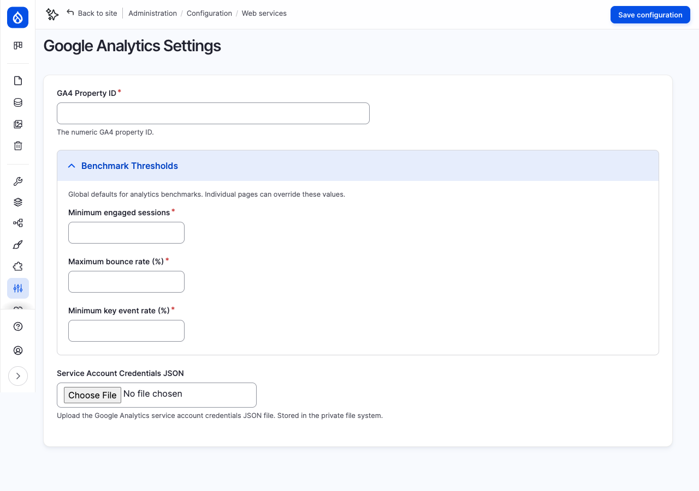

A module that closes the loop between analytics data and content editing. When page performance drops, an AI agent flags it — and hands the problem directly to the Canvas page builder with context pre-loaded.
Content teams check analytics in one tool, then switch to the CMS to make changes. That context switch loses the why — the specific metrics that flagged the page, the thresholds it missed, and what to do about it.
Check GA in one tab. Switch to Drupal in another. Try to remember which page failed, what the number was, what to do about it.
Module flags the page. Editor clicks "Work on it." Canvas opens with the problem and recommendations pre-loaded. One click from diagnosis to action.
Four stages, fully automated until the last step.
A new tab on the Content admin page shows all underperforming pages in one place.

Editors already live in Content > Pages. Adding a sibling tab ("AI Analytics Review") keeps the workflow in context rather than hiding it under Configuration or Reports where it would be forgotten.
Editors need to triage. Seeing "bounce rate is 78.3% (threshold: 70%)" directly in the table lets them decide which page to fix first without clicking into each one.
"Work on it" opens the page in Canvas with the analytics context pre-loaded.

Left: The AI panel (Drupal Canvas AI) — ready to accept the analytics summary as a prompt and suggest layout changes.
Center: Live page preview of "Resources & support."
Right: Page Data sidebar showing the monitoring toggle (on), engaged sessions (42), bounce rate (78.3), and per-page benchmark override fields.
The ai_message query parameter is a Canvas convention — it pre-fills the AI chat panel. This means no custom Canvas patches or UI modifications were needed. The module works with stock Canvas.
Base fields on the Canvas page entity mean the data is visible in the Page Data sidebar without any form_alter hacks. Editors can see current metrics and override benchmarks per-page, right where they edit the page.
This is what the Resources page looks like to visitors. The analytics monitoring is invisible to end users.
The monitoring fields are marked setInternal(TRUE) — they don't appear in REST, JSON:API, or any frontend rendering. The module adds zero overhead to page loads.
Global benchmark thresholds and GA4 credentials.

A landing page with 10,000 monthly sessions shouldn't have the same "minimum engaged sessions" threshold as a niche FAQ page. Global defaults handle the common case; per-page overrides (in the Canvas editor sidebar) handle exceptions.
Service account JSON files contain private keys. Drupal's private file system is not web-accessible, and the file upload field stores the file there automatically. No secrets in config, no secrets in git.
Deterministic comparison — no LLM needed for the pass/fail decision.
The BenchmarkEvaluator is a pure PHP service with no AI dependency. It compares numbers against thresholds and returns structured results. The AI agent is only invoked after a failure is confirmed — to generate a human-readable summary. If the agent fails, the module falls back to the evaluator's failure descriptions. This means the flagging system never depends on API availability.
// BenchmarkEvaluator::evaluate() returns: [ 'passed' => false, 'failures' => [ 'Engaged sessions (42.0) is below minimum threshold (100.0)', 'Bounce rate (78.3%) exceeds maximum threshold (70.0%)', ], ]
Engaged sessions (actual ≥ threshold), Bounce rate (actual ≤ threshold), Key event rate (actual ≥ threshold). Each check is independent — a page can fail one metric and pass the others.
Per-page override field → global config value → NULL (skip check). If no threshold is configured at either level, that metric is not evaluated — no false positives from missing config.
15 unit tests covering both the evaluator and the presave hook logic.
The screenshots and review page above are populated with synthetic analytics data injected by the ddev demo-setup command. The demo seeds 3 Canvas pages with realistic but fabricated metrics (engaged sessions, bounce rate, key event rate) and pre-written performance summaries. No Google Analytics API calls were made during this walkthrough.
This means the AI agent's summarization step was bypassed — the summaries shown are static strings, not LLM-generated. In production, the presave hook would call the Analytics Monitoring Agent to generate these summaries dynamically.
If you have a GA4 property, you can test the full pipeline:
/admin/config/services/ai-google-analytics along with your numeric GA4 property ID.drush cron fetches 90 days of GA4 data. Pages that fail benchmarks appear on the review page with AI-generated summaries. Click "Work on it" to jump straight into Canvas.The pass/fail decision is a simple numeric comparison. This makes it testable, predictable, and independent of API availability. The AI agent only generates the human-readable summary — and even that has a deterministic fallback.
Metrics are stored as base fields on the Canvas page entity. This keeps them co-located with the content they describe and avoids a separate "analytics data" entity type with its own CRUD overhead.
The flagged page summaries live in Drupal's State API (ai_google_analytics.context_data). This is transient data that doesn't need revision history, content moderation, or entity access control — State is the right tool.
Rather than patching Canvas or storing the AI message in a field, the module passes the summary via ?ai_message= query parameter. This is a clean integration point that works with stock Canvas and doesn't create coupling.
Not all pages are equal. A homepage might need 1,000 engaged sessions while a legal page needs 10. Per-page override fields in the Canvas editor sidebar let editors set page-specific thresholds without touching global config.
When benchmarks fail, the module sends an email pointing to the review page. This ensures the flagged content gets attention even if no one is actively checking the admin UI.